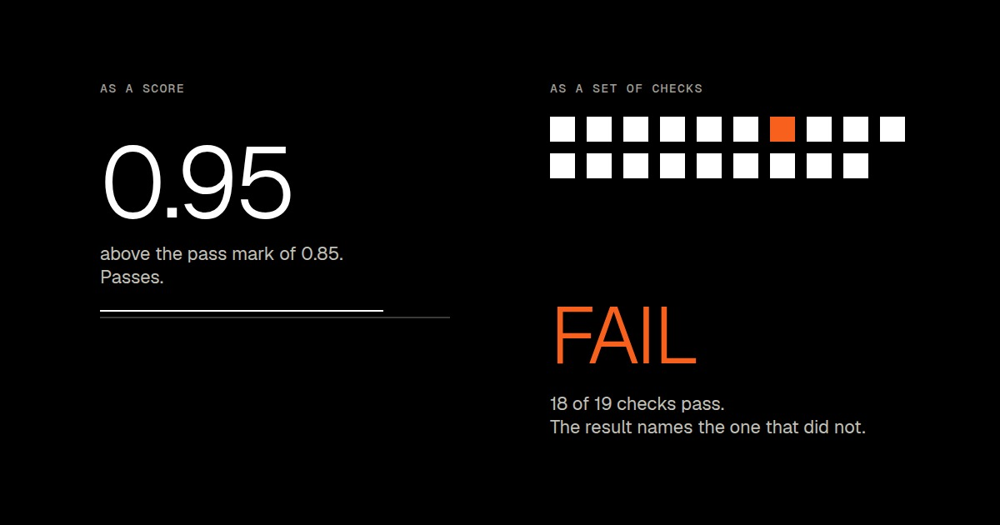
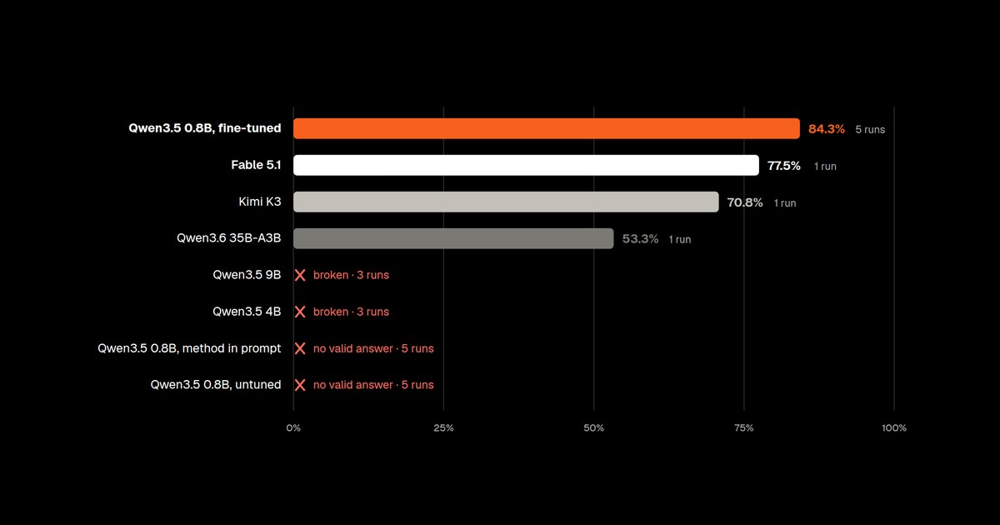
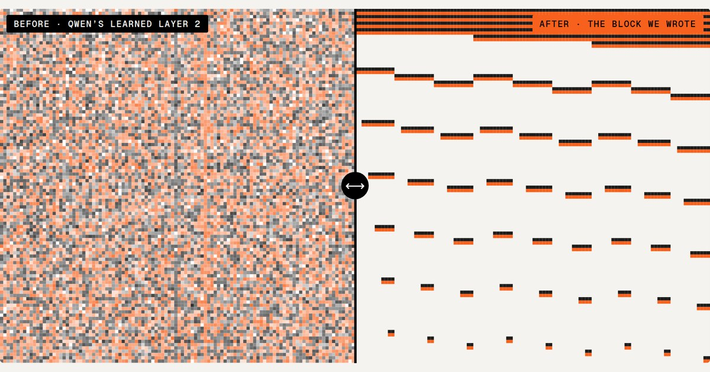

Research.
Part of our work is research on what happens inside models, and how to change it directly.

Decide what good means before the run, not while grading it.
Many teams test an AI system with a judge that reads the whole run and gives a score. It is fine for finding failures and a poor basis for approving a release or training a model. What the two stages of evaluation are, one worked case, and six questions that tell you which you are in.
Read the post →
We taught a 0.8B model to hand-write part of a neural network.
Frontier model Fable hand-wrote a wake-word detector’s last layer, 129 numbers, no training, by experimenting like a neuroscientist. Told the method, a 0.8B model failed; taught by example, it caught 84% of held-out synthetic utterances at 2 false alarms per 1,000 clips, against Fable’s 78%.
Read the post →
A hand-written answer key inside a real model.
We hand-wrote a calculator into a real chat model: 16 new layers that make Qwen2.5-0.5B multiply exactly, while its own 24 layers compute what they did before. Then we pointed standard interpretability tools at this known circuit. Attribution patching missed 13 of the 14 blocks that activation patching shows doing the work.
Read the post →